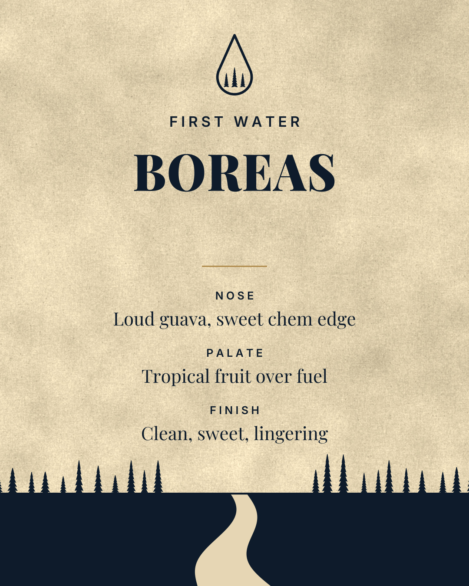

Boreas, First Water live rosin

NoseLoud guava, sweet chem edge
PalateTropical fruit over fuel
FinishClean, sweet, lingering
Single source. One cultivar per jar, grown, washed and pressed on our own farm.